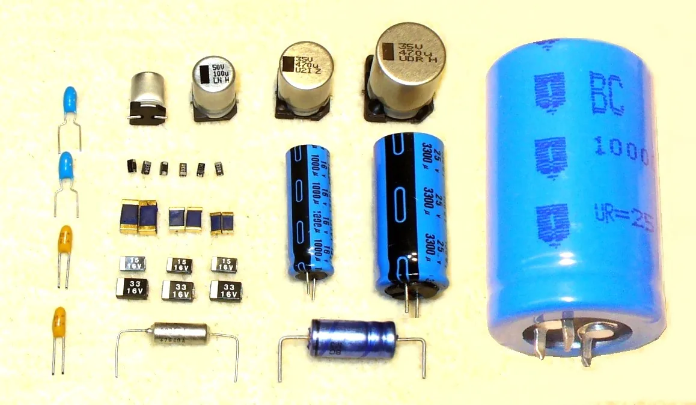
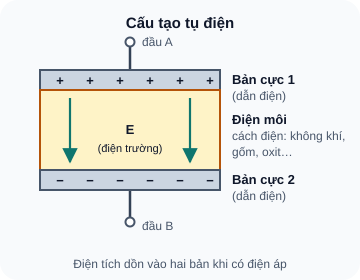
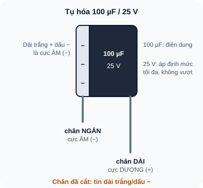
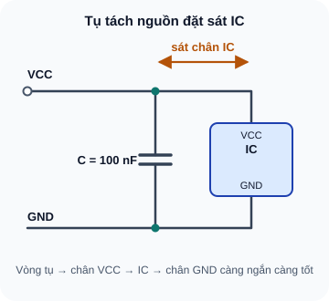

Tụ Điện & Điện Dung
Linh kiện lưu trữ năng lượng điện trường — nền tảng của mọi mạch lọc, nguồn và xử lý tín hiệu.
- Hiểu tụ điện lưu trữ năng lượng bằng điện trường giữa hai bản cực
- Hiểu điện dung (Capacitance) và đơn vị Farad
- Phân biệt tụ phân cực (electrolytic) và không phân cực (ceramic, film)
- Đọc ký hiệu trên thân tụ: giá trị, điện áp định mức, phân cực
- Hiểu tại sao không được cắm tụ điện phân cực ngược chiều
- Đọc ký hiệu mã số 3 chữ số trên tụ gốm
- Hiểu ứng dụng cơ bản: decoupling, bulk storage, lọc nhiễu
- Đo và kiểm tra tụ điện bằng multimeter

Dụng cụ và linh kiện
| Tên | Thông số | SL |
|---|---|---|
| Tụ điện phân cực 100µF/25V | Electrolytic, dạng trụ tròn | 2 |
| Tụ điện phân cực 10µF/25V | Electrolytic | 2 |
| Tụ gốm 100nF (0,1µF) | Ceramic, ký hiệu "104" trên thân | 5 |
| Tụ gốm 10nF | Ceramic, ký hiệu "103" | 2 |
| Điện trở 10 kΩ | ¼W | 2 |
| Nguồn 5V + breadboard | — | 1 bộ |
| Multimeter (có chức năng đo tụ) | Optional — nếu có | 1 |
1. Tụ điện — Linh kiện lưu trữ năng lượng điện trường
Tụ điện (Capacitor, ký hiệu C) là linh kiện thụ động lưu trữ năng lượng dưới dạng điện trường giữa hai bản dẫn điện (bản cực) được ngăn cách bởi một lớp vật liệu cách điện (điện môi — dielectric).
Khác với điện trở (tiêu tán năng lượng thành nhiệt), tụ điện lưu trữ năng lượng và có thể trả lại cho mạch. Tụ điện không "tiêu thụ" điện áp DC lâu dài — sau khi nạp đầy, nó chặn dòng DC. Nhưng với tín hiệu AC, tụ điện cho phép dòng đi qua (trở kháng phụ thuộc tần số). Đây là đặc tính cốt lõi của tụ điện.
1.1 Cấu tạo vật lý

Đọc mô tả D08-1
Hai bản cực dẫn điện ngăn cách bởi lớp điện môi cách điện. Bản trên tích điện dương, bản dưới tích điện âm; điện trường E hướng từ bản dương sang bản âm trong điện môi.
1.2 Điện dung — Capacitance (C)
Điện dung đo khả năng lưu trữ điện tích của tụ điện. Tụ có điện dung lớn lưu được nhiều điện tích hơn với cùng một điện áp.
Đơn vị Farad (F) — đặt theo Michael Faraday (1791–1867) — rất lớn so với thực tế. Tụ điện thông dụng có giá trị từ pF đến mF:
| Ký hiệu | Tên | Giá trị | Ứng dụng điển hình |
|---|---|---|---|
pF | Picofarad | 10⁻¹² F | RF, oscillator, ký sinh (stray capacitance) |
nF | Nanofarad | 10⁻⁹ F | Lọc tần số cao, decoupling tần số cao |
µF | Microfarad | 10⁻⁶ F | Decoupling nguồn, lọc tần số thấp, audio |
mF | Millifarad | 10⁻³ F | Supercapacitor, bộ lưu điện nhỏ |
F | Farad | 1 F | Supercapacitor, backup nguồn |
2. Phân loại tụ điện thông dụng
2.1 Tụ điện phân cực — Electrolytic Capacitor
Tụ điện phân cực (thường gọi là tụ hóa hay tụ nhôm) sử dụng lớp oxide nhôm làm điện môi, tạo ra điện dung lớn trong thể tích nhỏ. Đặc điểm nhận dạng:
- Hình trụ tròn, thường có màu đen, xanh hoặc nâu
- Có dải trắng hoặc ký hiệu (–) đánh dấu chân âm (cathode)
- Chân dài hơn = dương (+, anode)
- Điện áp định mức ghi trên thân: "25V", "50V", "16V"...
- Điện dung ghi trên thân: "100µF", "10µF"...
Tụ điện phân cực phải được cắm đúng chiều: cực dương (+) vào điểm có điện áp cao hơn, cực âm (–) vào điểm có điện áp thấp hơn. Nếu cắm ngược, lớp oxide điện môi bị phá hủy, tụ sẽ nóng lên, phình phồng và có thể nổ (nội áp hơi tăng đột ngột). Đây là nguyên nhân phổ biến gây cháy mạch khi sửa chữa. Luôn kiểm tra chiều trước khi cấp điện.

Đọc mô tả D08-2
Thân tụ trụ có dải trắng với dấu trừ ở phía cực âm. Chân ngắn là cực âm, chân dài là cực dương khi chân chưa bị cắt. Thân ghi 100 µF và 25 V là điện áp định mức tối đa.
2.2 Tụ gốm — Ceramic Capacitor
Tụ gốm (ceramic capacitor) sử dụng vật liệu gốm làm điện môi. Đặc điểm:
- Thường có màu vàng, cam hoặc nâu, dạng đĩa hoặc ống nhỏ
- Không phân cực — cắm chiều nào cũng được
- Điện dung nhỏ (pF đến vài µF), rất ổn định
- Giá trị được mã hóa bằng 3 chữ số (tương tự SMD resistor)
- Dùng nhiều nhất: 100nF (0,1µF) cho decoupling nguồn IC
2.3 Đọc mã số trên tụ gốm
Format: ABС → giá trị (pF) = AB × 10^C
| Mã in trên tụ | Giá trị (pF) | Quy đổi | Dùng cho |
|---|---|---|---|
101 | 100 pF | 100 pF | RF, oscillator |
102 | 1,000 pF | 1 nF | Lọc tần số cao |
103 | 10,000 pF | 10 nF = 0,01 µF | Decoupling tần số cao |
104 | 100,000 pF | 100 nF = 0,1 µF | Decoupling IC — phổ biến nhất |
105 | 1,000,000 pF | 1 µF | Lọc nguồn |
474 | 470,000 pF | 470 nF ≈ 0,47 µF | Lọc nguồn |
3. Điện áp định mức — Voltage Rating
Mỗi tụ điện có một điện áp định mức (working voltage). Nếu điện áp đặt vào tụ vượt quá giá trị này, điện môi bị đánh thủng và tụ hỏng (thường không phục hồi được).
Nguyên tắc chọn điện áp định mức: Chọn tụ có điện áp định mức ít nhất gấp 1,5–2 lần điện áp làm việc tối đa trong mạch. Ví dụ:
- Mạch 5V → Chọn tụ ≥ 10V (khuyến nghị 16V hoặc 25V)
- Mạch 12V → Chọn tụ ≥ 25V (khuyến nghị 35V hoặc 50V)
- Mạch 3,3V → Chọn tụ ≥ 6,3V (khuyến nghị 10V hoặc 16V)
Dùng tụ 25V trong mạch 5V không gây hại — tụ vẫn hoạt động bình thường, chỉ hơi to hơn so với tụ 6,3V. Nhưng dùng tụ 6,3V trong mạch 12V sẽ phá hủy tụ. Khi không chắc, luôn chọn điện áp định mức cao hơn.
4. Ứng dụng tụ điện trong mạch thực tế
4.1 Decoupling Capacitor — Tụ lọc nhiễu nguồn IC
Đây là ứng dụng phổ biến nhất của tụ gốm 100nF. Khi IC chuyển trạng thái (từ LOW sang HIGH), nó cần dòng tức thời lớn trong thời gian rất ngắn. Nếu nguồn không đáp ứng kịp, điện áp VCC sẽ sụt xuống tạm thời (voltage droop) — gây lỗi logic.
Tụ 100nF đặt cạnh chân VCC của IC là "kho dự trữ điện tích tại chỗ": khi IC cần dòng đột ngột, tụ phóng điện tức thì thay vì chờ dòng từ nguồn đi qua dây dẫn dài (có điện trở và điện cảm ký sinh). Quy tắc: mỗi IC cần ít nhất một tụ 100nF đặt cạnh chân VCC, càng gần càng tốt.

Đọc mô tả D08-3
Tụ 100 nF nối giữa ray VCC và ray GND, đặt sát chân VCC và GND của IC. Chân VCC và GND của IC lấy từ hai ray này.
4.2 Bulk Capacitor — Tụ ổn áp nguồn chính
Tụ hóa lớn (100µF–10000µF) đặt ở đầu ra của mạch nguồn (regulator, adapter) làm "bình ắc quy nhỏ" để giữ điện áp ổn định khi tải thay đổi đột ngột. Khi bơm nước bật (dòng tăng đột ngột), tụ bulk phóng điện để duy trì điện áp cho đến khi nguồn điều chỉnh kịp.
5. Thực hành: Nhận biết và kiểm tra tụ điện
Lấy tụ hóa 100µF/25V: xác định cực dương (chân dài) và cực âm (dải trắng). Đọc giá trị và điện áp định mức.
Lấy tụ gốm có mã "104": đọc giá trị = 100,000 pF = 100 nF = 0,1 µF. Xác nhận không phân cực.
Nếu multimeter có chức năng đo điện dung (nF/µF): đo điện dung thực tế của tụ hóa 100µF. Kỳ vọng: 80–120µF (sai số ±20% là bình thường cho tụ hóa).
Kiểm tra tụ hóa bằng cách nạp và đo: nối tụ 100µF vào nguồn 5V trong 5 giây (đúng chiều), ngắt nguồn, đo điện áp hai đầu tụ. Tụ tốt giữ được ~4–5V.
| Tụ điện | Giá trị đọc được | Điện áp định mức | Phân cực? | Điện dung đo (nếu có) |
|---|---|---|---|---|
| Tụ hóa #1 | _____ | _____ | Có ✓ | _____ |
| Tụ hóa #2 | _____ | _____ | Có ✓ | _____ |
| Tụ gốm "104" | 100 nF | Không in | Không | _____ |
| Tụ gốm "103" | 10 nF | Không in | Không | _____ |
6. Debug — Lỗi thường gặp với tụ điện
| Hiện tượng | Nguyên nhân | Kiểm tra | Xử lý |
|---|---|---|---|
| Tụ nóng, phình đỉnh, rò rỉ dịch | Tụ cắm ngược chiều hoặc điện áp vượt định mức | Quan sát ngay khi cấp điện; ngửi mùi hóa chất | Tắt nguồn ngay; tháo và thay tụ mới; kiểm tra lại chiều cắm |
| IC reset ngẫu nhiên hoặc hoạt động không ổn định | Thiếu decoupling capacitor 100nF cạnh VCC của IC | Dùng oscilloscope (nếu có) hoặc đo V_VCC xem có sụt áp không | Thêm tụ 100nF cạnh chân VCC của IC nghi ngờ |
| Điện áp đầu ra nguồn có gợn sóng lớn | Tụ bulk quá nhỏ hoặc hỏng (ESR cao) | Đo V_ripple; thay tụ mới thử | Tăng điện dung tụ bulk; kiểm tra tụ hóa cũ bằng ESR meter |
A1: "472" = 47 × 10² = 4,700 pF = 4,7 nF = 0,0047 µF
A2: "331" = 33 × 10¹ = 330 pF
A3: Tối thiểu 12 × 1,5 = 18V → Chọn 25V hoặc 35V
A4: Lớp oxide điện môi bị phá hủy (không chịu được phân cực ngược), tụ dẫn dòng lớn, nóng lên, phình phồng và có thể nổ. Đây là lỗi nguy hiểm cần tránh tuyệt đối.
A5: Dây dẫn dài có điện trở và điện cảm ký sinh. Khi IC cần dòng đột ngột (transient), điện cảm của dây cản trở dòng thay đổi nhanh → điện áp sụt. Tụ đặt gần IC hoạt động như "nguồn cục bộ" không qua điện cảm dây dẫn.